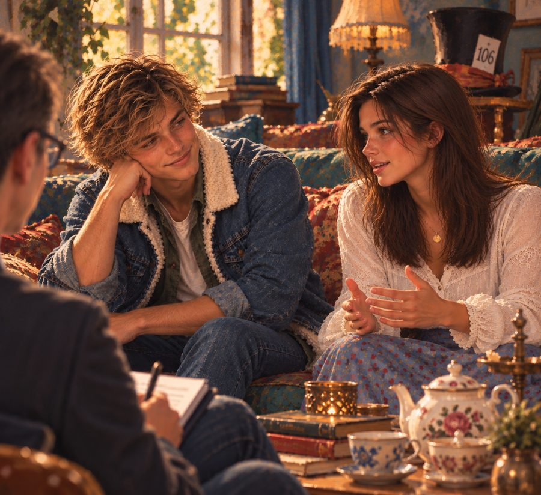
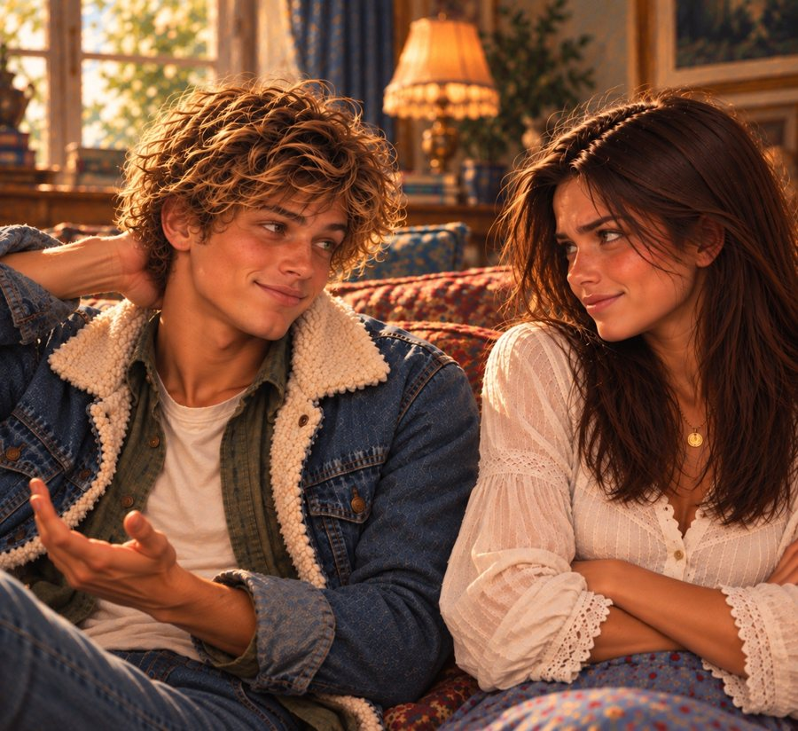

Redaktion: Hallo ihr beiden, schön, dass ihr da seid. Seid ihr bereit für unsere Fragen?
Sam setzt sich gespannt aufrecht hin und Olivia trinkt einen großen Schluck Tee. Kurz darauf fängt sie an, zu husten.
Olivia: Sorry, hab mich verschluckt. Ich bin manchmal ein Schussel.
Sam (lachend): Manchmal?
Olivia: Werd nicht frech.
Sam (beugt sich vor und flüstert): Sonst was?
Redaktion: Oooookay, hier kommt die erste Frage: Wie würdet ihr den anderen mit drei Begriffen beschreiben?
Sam (betrachtet Olivia eine Weile, grinst dann): Schusselig.
Olivia: Haha.
Sam: Großherzig und … entzückend.
Olivia lässt Haare vor ihr Gesicht fallen und sieht verdächtig so aus, als wäre sie wieder rot geworden.
Redaktion: Sehr schön. Und wie beschreibst du Sam, Olivia?
Olivia: Irritierend, intensiv und charmant.
Sam: Wieso bin ich irritierend?
Redaktion: Das könnt ihr später ausdiskutieren. Kommen wir zu Frage zwei: Was mögt ihr an Klüpfenhagen am meisten?
Olivia: Dass meine Oma Trude hier so happy ist.
Sam (nachdenklich): Dass ich hier meine Wurzeln habe.
Redaktion: Frage drei lautet: Was ist eure größte Superkraft, die im Buch komplett nutzlos ist?
Olivia (pustet die Wangen auf): Keine Ahnung … ich habe keine Superkraft, glaube ich.
Sam: Hast du mir nicht erzählt, dass du super gut Origami falten kannst?
Olivia: Ja, aber das ist doch keine Superkraft.
Redaktion: Schon irgendwie. Da muss man ja extrem genau arbeiten.
Olivia (zuckt mit den Schultern): Na gut, dann das.
Redaktion: Und du, Sam?
Sam (grinsend): Ich kann ganz wunderbar wichtige Sachen verlegen. Oder Gus in den Wahnsinn treiben.
Redaktion: Inwiefern sind das Superkräfte?
Sam: Naja, das zählt beides in die Kategorie ›Überlebenstraining‹. (lacht) Vor allem, wenn man Gus bei seinem Nachmittagstee auf die Nerven geht.
Olivia: Unfug, Gustav ist der netteste Mensch, den ich kenne.
Sam: Normalerweise. Komm mal vorbei, wenn ich ihm auf die Nerven gehe.
Redaktion: Gut, dann unsere vierte Frage: Wenn ihr einen Tag jemand anderes sein könntet, wer wärt ihr dann?
Olivia: Elodie, ganz klar.
Sam: Dann wäre ich gerne Wilhelm Grüneklee.
Redaktion: Wow, das ging ja schnell. Und uns würde wahnsinnig das ›Warum‹ interessieren.

Sam: Wilhelm Grüneklee ist einer der besten Maler, die es in Deutschland je gab. Ich hätte gerne für einen Tag sein Talent.
Olivia (schlägt ihm auf den Oberarm): Sam! Du bist doch unfassbar talentiert. Du musst nicht Wilhelm Grüneklee sein, um atemberaubende Bilder zu malen.
Sam: Ich raube dir den Atem? Also mit meinen Bildern?
Olivia (genervt): Du raubst mir den letzten Nerv.
Sam legt die Hand auf die Brust, so als hätten ihre Worte ihn verletzt.
Redaktion (lacht leise): Was ist mit dir, Olivia? Warum Elodie?
Olivia (seufzt): Ich habe sie auf der Suche nach ihrem Geheimnis zwar gut kennengelernt, aber nur von außen. Ich würde gerne wissen, wie es sich angefühlt hat, sie zu sein. Und einmal so ein Kleid anziehen …
Sam: Ich kenne jemanden im Theaterfundus. Das mit dem Kleid lässt sich einrichten.
Redaktion (raschelt leise mit Papier, auf der Suche nach der letzten Frage): Zum Abschluss möchten wir euch bitten, folgenden Satz für uns zu vervollständigen: ›Das größte Glück wäre für mich, wenn …‹
Olivia: … wenn meine Oma Trude in zehn Jahren auch noch ihren Neunzigsten hier in Klüpfenhagen feiern könnte.
Sam (greift nach ihrer Hand und drückt sie): Und für mich wäre das größte Glück, wenn Gus und ich für diese Feier auf der Gästeliste stehen würden (er schaut Olivia an und zwinkert ihr zu). Mal ganz offiziell.
Olivia (abwehrend): Sam, du weißt, dass ich …
Sam (legt ihr sanft einen Finger auf die Lippen): Das klären wir später unter vier Augen, Wölkchen. Und dann verrätst du mir endlich, wo Flatterhagen liegt.
Olivia (greift seine Hand und legt sie auf seinem Bein ab): Tut mir leid, später hab ich keine Zeit. Hab Gustav versprochen, ihm wieder dabei zu helfen, Flyer einzutüten.
Sam: Das kannst du doch bestimmt absagen. Gus versteht das, er ist …
Redaktion: Ähm? Hallo, ihr beiden? Wir machen uns dann jetzt mal aus dem Staub! Danke vielmals, dass ihr euch Zeit für das Interview genommen habt.
Sam: Kein Ding.
Olivia: Haben wir gern gemacht. Auch ohne Drohung von Katja, so wie bei Jake.
Sam (überrascht): Ach, echt? Dich musste sie nicht bedrohen?
Olivia: Sam?
Sam: Mich natürlich auch nicht … ich meine …
Olivia (eindringlicher): Sam?
Sam: Ja … also. Oh, wartet, ich hab noch was für euch (er legt eine Tüte undefinierbarer schwarzer Klumpen auf den Tisch).
Redaktion (nimmt es vorsichtig auf): Was zum Teufel ist das?
Olivia: Klönterkröt. Eine Klüpfenhagener Spezialität. Sieht furchtbar aus, schmeckt aber hervorragend (sie wirft Sam einen Seitenblick zu, der klarmacht, dass sie sein Ablenkungsmanöver eindeutig durchschaut hat).
Redaktion (skeptisch): Wenn du es sagst … Wie auch immer, es wird Zeit für uns! Macht’s gut, ihr beiden. Viel Erfolg für euer Buch.
Die beiden bedanken sich und fangen direkt wieder an zu diskutieren. Auf dem Weg zum Ausgang stecken wir uns todesmutig so ein Klönterdingsbums in den Mund. Und … oh … ohhhh … ohhhhhh!
Elodies Geheimnis – ein Jugendroman über den Mut, für andere einzustehen und den eigenen Weg zu gehen.